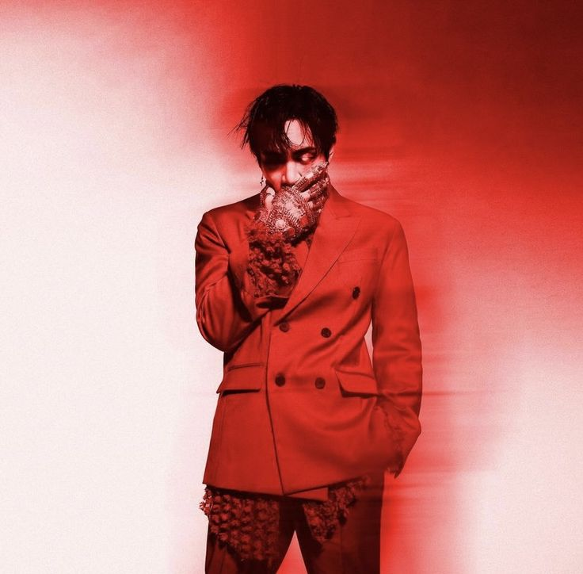

DPR IAN
About DPR IAN
Christian Yu (born 6 September 1990), known professionally as DPR Ian, is an Australian singer, rapper, and director based in Los Angeles. He is a former member of Yedang Entertainment boy group C-Clown, which was active between 2012 and 2015. Yu made his solo debut under his co-founded label Dream Perfect Regime (DPR) with the digital single "So Beautiful" on 26 October 2020. His first studio album Moodswings in to Order was released on 29 July 2022. He was the 10th most streamed Kpop Male Solo Artist Globally on Spotify in 2022.
Early Life
DPR Ian was born in Sydney, Australia on 6 September 1990. His parents separated when he was young, and he was raised by his mother. He attended Wollongong High School of the Performing Arts and played in a heavy metal band, where he was influenced by the musicals and circuses he attended as a child. In 2008, when he was 18, he started uploading videos to his YouTube channel, going by the name of B Boy B.yu. After graduating from high school, Yu studied science and art at the University of Sydney for one year before dropping out. He then moved to South Korea to pursue dancing, initially having no intention of becoming a K-pop idol. However, this changed when he was street cast by an entertainment agency; when he auditioned, he couldn't sing but he was able to impress with his dancing abilities
Career
Yu debuted as the leader of K-pop group C-Clown under the stage name Rome, which was derived from his Korean name "Ba-rom". The 6-member boy group debuted in 2012 and was the first idol group created by entertainment agency Yedang Entertainment, which would later be renamed Banana Culture EntertainmentAfter C-Clown disbanded in October 2015, Yu along with Live, Cream, and REM established the label Dream Perfect Regime, all of whom attach the label's acronym—DPR—to their names. In 2021, he released his debut extended play Moodswings in This Order.[13] He released his first studio album Moodswings In To Order in 2022. Yu is behind the visual arts for the DPR crew and directs all DPR music videos such as Live's "Jasmine", "Legacy", and "Yellow Cab" along with his own songs, like "So Beautiful", "No Blueberries", and "Ballroom Extravaganza". He has also directed and edited music videos for artists outside of DPR including Bobby's "HOLUP", Mino's "Body", and Taeyang's "Wake Me Up". In 2020, DPR Ian appeared in the music video for "5 Stars" by CL. They also collaborated in "So Beautiful" and "No Blueberries" that year. In 2021, DPR Ian and Live released the track "Diamonds + and Pearls" as part of the soundtrack to the Marvel Film Shang-Chi and the Legend of the Ten Rings. This marked the duo—along with fellow artists on the album—becoming two of the first Korean artists to participate in a Marvel soundtrack album. In 2024, DPR Ian directed and appears in the music video for "Shopper" by IU
Artistry
DPR Ian was diagnosed with bipolar disorder when he was a teenager, then later in his twenties with dissociative identity disorder (DID). He later created an alter ego, Mito, to reflect the low episodes of his mental disorder. In an interview with Billboard, he said that "I wanted to portray a character dealing with various mental disorders which may be deemed negative or dark in a realistic sense but at the same time can also be seen as superpowers in a different light". He talks about a personified version of his high manic episodes named 'Mr. Insanity' with his newest album, Dear Insanity, saying, "I thought it had to be about someone that represents my utmost manic highs, but all in all I've always thought Mr. Insanity to be more of a scary character. You're not sure what he's capable of"
Popular Songs
- NO BLUEBERRIES
- Don't Go Insane
- Ballroom Extravaganza
- So Beautiful
Gallery
For more information, click here.